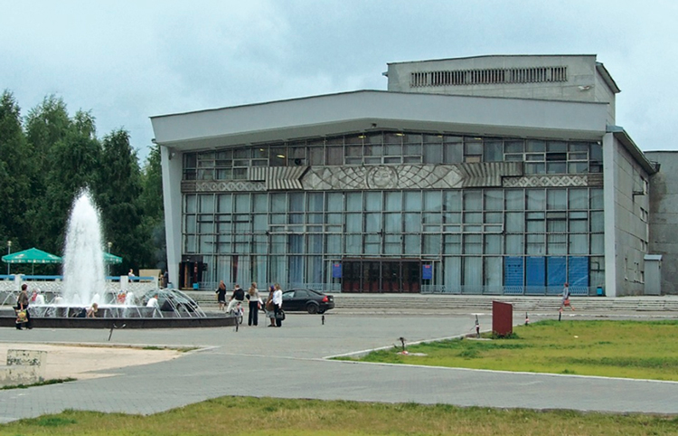
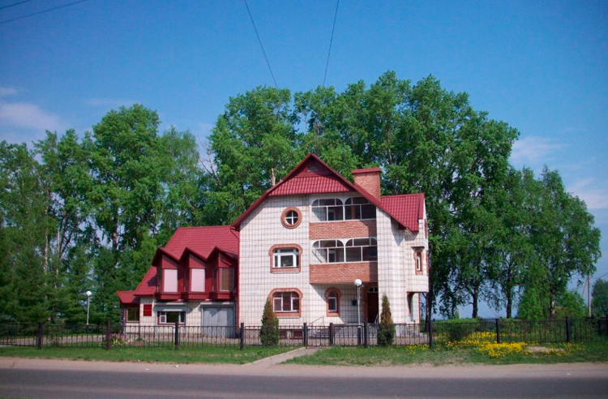
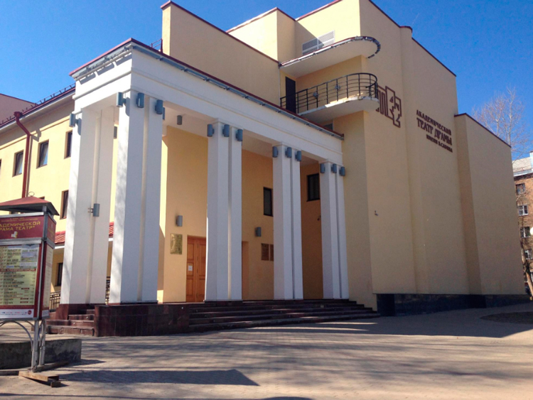
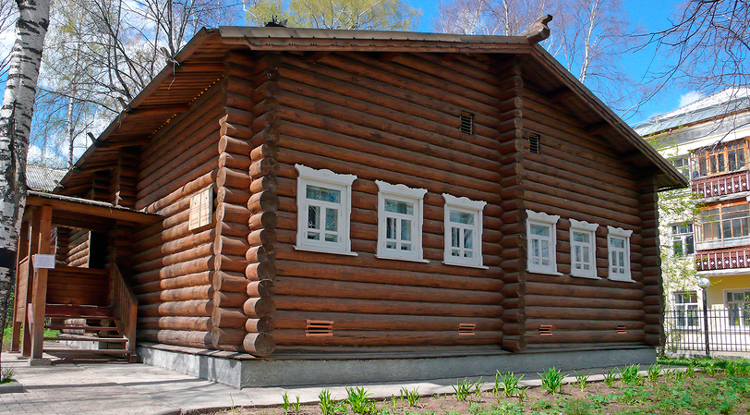
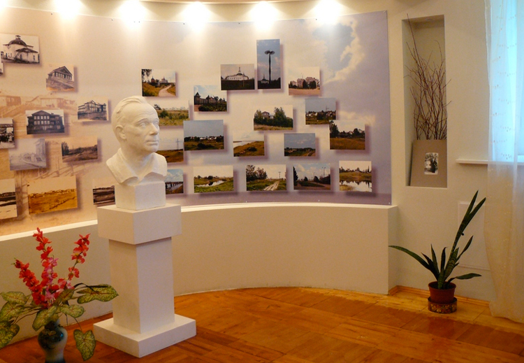

1.Государственный театр оперы и балета Республики Коми
Большим интересом среди жителей и гостей города пользуется Государственный театр оперы и балета Республики Коми. Он был открыт в 1958 году, для своего первого представления был выбран спектакль П. И. Чайковского «Евгений Онегин». В первые годы была сформирована труппа из талантливых актеров, которые благодаря своему творческому подходу постепенно превратилась в одну из самых профессиональных.
В настоящее время в состав их выступлений входят знаменитые оперы и оперетты. Труппа активно гастролирует по разным городам России. На сцене театра регулярно выступают звезды балета мирового уровня, а также ставятся спектакли отечественных и зарубежных исполнителей. Не забывают здесь и о маленьких зрителях. Каждый театральный сезон удивляет новыми постановками для детей и взрослых.

2.Музей олимпийской чемпионки Раисы Сметаниной
В знак уважения к заслугам известной лыжницы Раисы Сметаниной в 1997 году был открыт музей, посвященный олимпийской чемпионке (на англ. Raisa Smetanina Olympic Champion's Museum). Эта спортсменка ни раз участвовала в Олимпиадах и привозила медали высшего достоинства.
Сметанина обладает большой коллекцией всевозможных наград и титулов. На первом этаже дома, в котором проживает лыжница, был создан небольшой зал для выставки. В коллекцию музея вошли призы, медали, фотографии и другие личные вещи спортсменки.
В 2008 году экспозиция расширилась. Появились залы, посвященные истории развития лыжного спорта во второй половине 20 века. Кроме этого отдельное место заняли личные вещи и документы других прославленных лыжников Республики Коми.

3.Государственный академический театр драмы им. В.А. Савина
Старейшим театром на всей территории республики Коми является государственный академический театр драмы им. В.А. Савина (на англ. V. Savin State Academical Drama Theatre). Он был открыт в 1930 году благодаря Виктору Савину.
Именно под его руководством была организована первая труппа из актеров-любителей. Спустя некоторое время ее состав пополнился профессиональными актерами, а также выпускниками многих театральных ВУЗов страны.
В 1978 году театру было присвоено имя его первого руководителя. В настоящее время это один из ведущих театров города и региона. Здесь проходят спектакли на двух языках, традиционные классические произведения сменяют современные постановки. Среди самых любимых зрителями спектаклей находятся выступления по произведениям У. Шекспира, Г. Лорна, Э. Ростана и многих других.

4.Дом-музей И.П. Морозова
Одной из интереснейших достопримечательностей Сыктывкара является дом-музей И.П. Морозова (на англ. I. Morozov's House Museum). Он был открыт в 2004 году в честь местного государственного деятеля Ивана Павловича Морозова. Он больше 20 лет был руководителем Республики Коми.
Музей представляет собой деревянную избу, в которой воссоздана обстановка 20 века. В состав экспозиции входят подлинные фотографии и документы Морозова. В первом зале можно ознакомиться с бытом семьи, а во втором — с общественной и политической деятельностью Ивана Павловича.
В музее регулярно устраиваются временные выставки, которые посвящены выдающимся людям советской эпохи. Частыми посетителями дома Морозова являются местные школьники, которые знакомятся с жизнью и работой людей 20-го века.

5.Литературно-театральный музей им. Н.М.Дьяконова
В память о известном режиссере, талантливом актере, драматурге Н. М. Дьяконове в 1989 году был открыт литературно-театральный музей, названный его именем (на англ. Diakonov Museum of Literature and Theater). Благодаря этому человеку репертуар коми творчества значительно расширился.
Музей состоит из двух основных экспозиций: в первой можно ознакомиться с историей основания и развития театров на территории Республики Коми, во второй — с жизнью и творчеством самого актера. Кроме этого здесь регулярно проходят временные выставки, посвященные театру и искусству.
Особое внимание привлекает холл первого этажа. Здесь разместилась экспозиция, которая рассказывает о быте и домашнем интерьере домов жителей города в 19-20 веке. В 2002 году на базе музея открылась мастерская по обработке бересты, в которой занимаются дети и взрослые.
